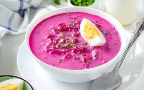

Lietuviška virtuvė pasižymi sotumu ir paprastais, vietiniais ingredientais. Populiariausi patiekalai - cepelinai, šaltibarščiai ir kugelis. Žemiau rasi trumpą pristatymą, nuotraukų galeriją, ingredientų lentelę bei kontaktų formą.
Apie
Galerija
Keletas žinomų lietuviškų pateikalų:

Nuotraukos iš Google (švietimo tikslams tinkamos). jei reikia - pakeiskite į vietinius failus img/foto1.jpg ir pan.
Ingredientai (kugelio pavyzdys)
Šioje lentelėje - pagrindiniai tradicinio kugelio ingredientai ~4 porcijoms.
| Ingredientas | Kiekis |
|---|---|
| Bulvės | 1,5 kg |
| Kiaušiniai | 3 vnt. |
| Šoninė | 150 g |
| Svogūnas | 1 vnt. |
| Pienas arba grietinėlė | 200 ml |
| Druska, pipirai | pagal skonį |
Kontakų forma
Turite klausimų ar pasiūlymų apie lietuviškus patiekalus? Parašykite: